Propuestas de distribución
Cada página de la versión B dibujada como esquema, con los colores y las letras elegidas. Los puntos amarillos numerados explican cada cambio. Los textos son los actuales y pueden cambiar: lo que importa es dónde va cada cosa.

Desarrollo y dirección de formatos y contenidos.
Creación / Producción / Showrunning / ConsultoríaSinapsis Producción es una productora audiovisual especializada en crear, desarrollar, formatear y producir contenidos.
+30 años · 11 países · Buenos Aires y Miami
Conocé al equipoVer todos
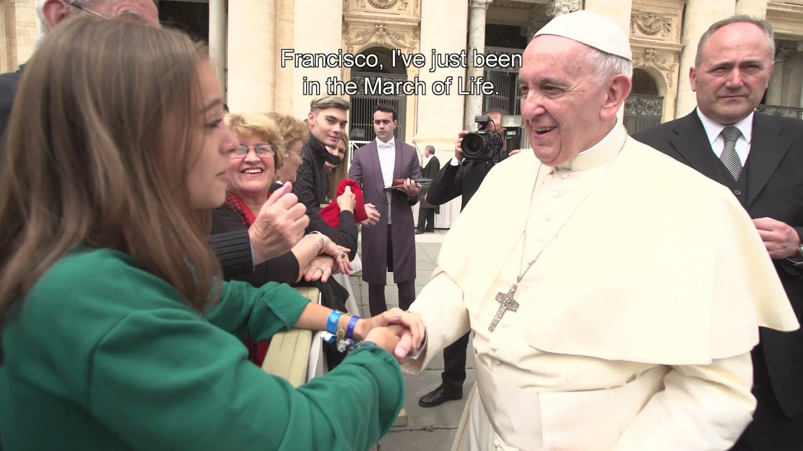
#MarchaTVP / Encuentro / Cont.ar

El Domo del DineroNBC Telemundo
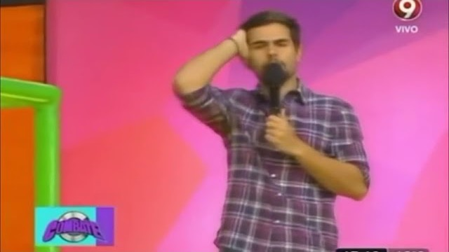
Combate ArgentinaEl Nueve
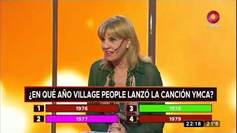
La Hora ExactaEl Nueve
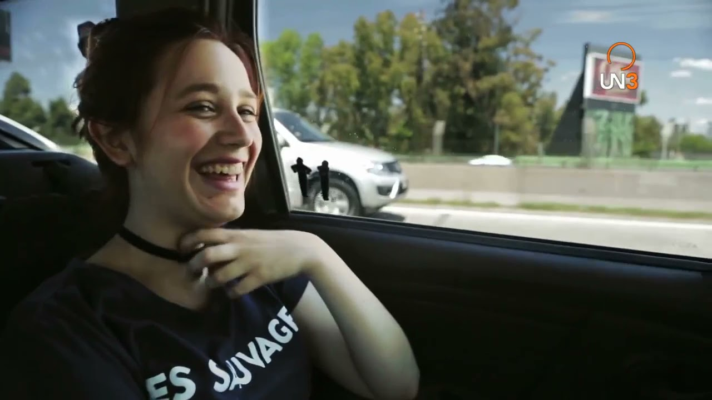
RumuviUN3 TV / Flow
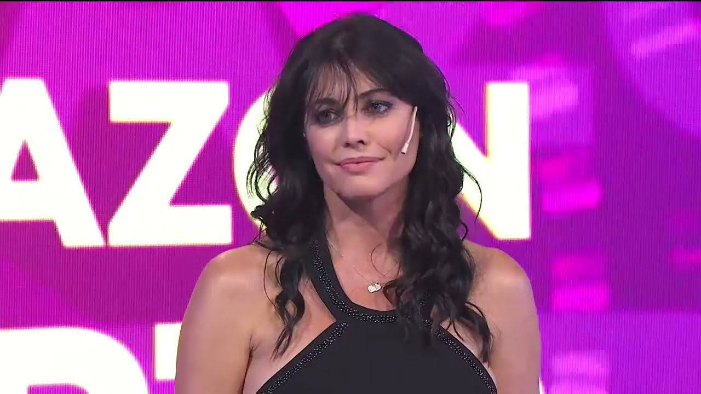
DilemaAmérica TV · Latina · Bolivisión

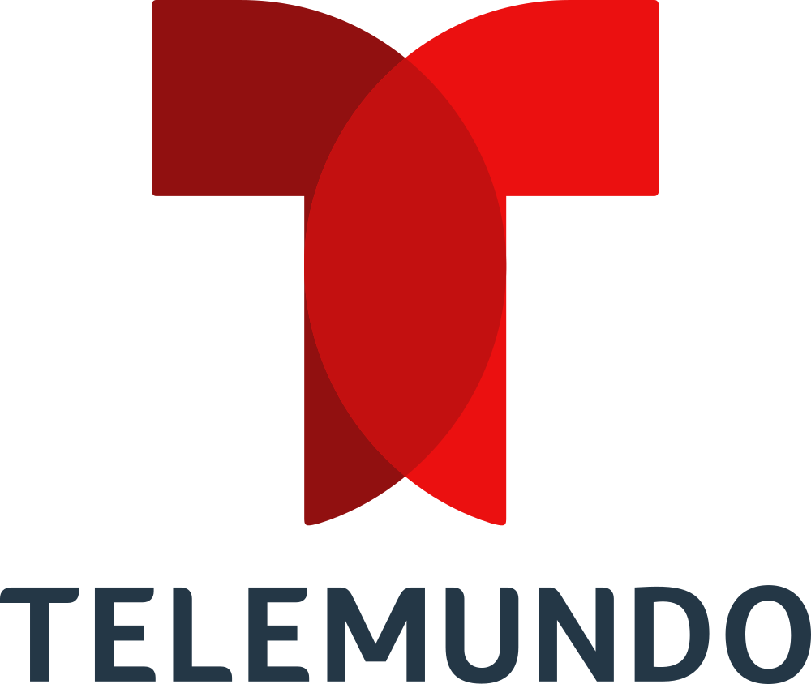
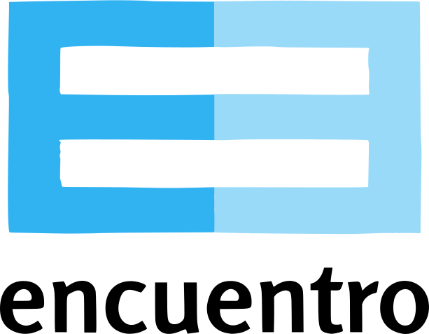
Proyectos.
#MarchaTVP / Encuentro · 2019
El Domo del DineroNBC Telemundo
Combate ArgentinaEl Nueve · 2014–2016
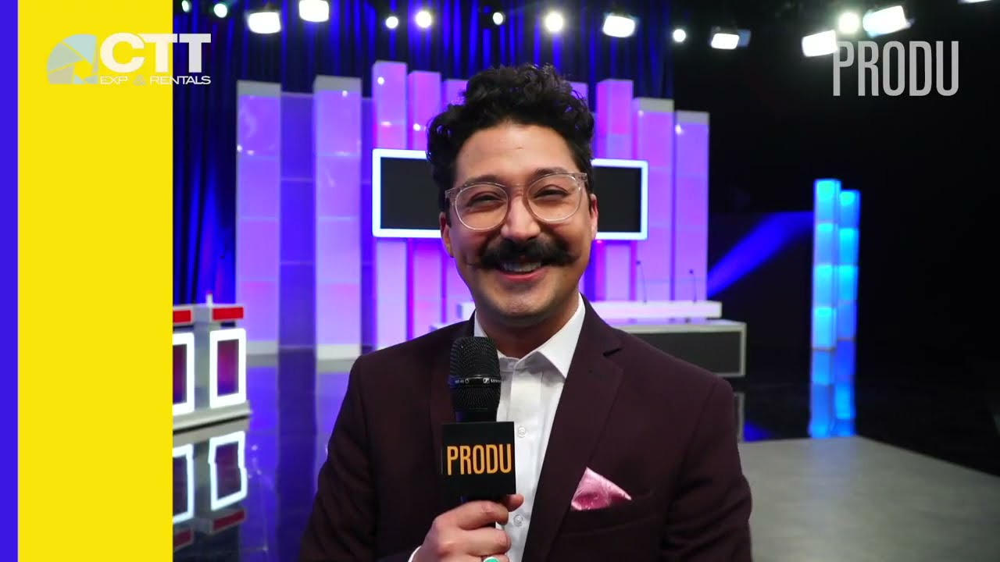
Cien Latinos DijeronEstrella TV · 2018–2021
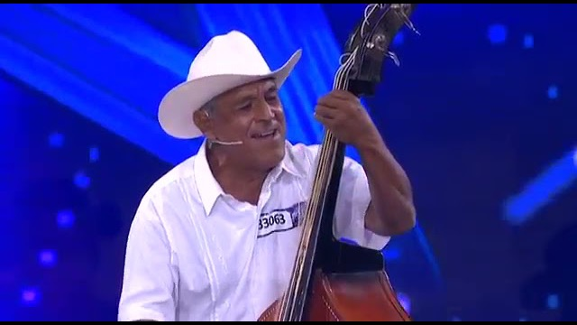
México Tiene TalentoTV Azteca · 2015
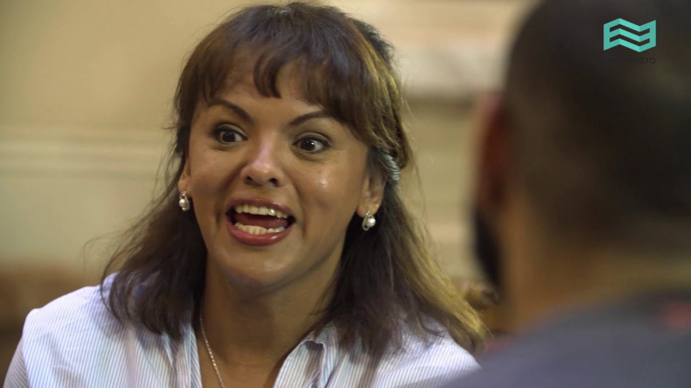
La Fábrica del DeseoTVP / Encuentro · 2017
- 2019 · #MarchaTVP / Encuentro / Cont.arFormato original
- 2018–2021 · Cien Latinos DijeronEstrella TV / FremantleShowrunning
- 2017 · Experimentores 1Paka Paka / TVPProducción
- Tigo SportsProcesos de producción, eficiencia, contenidos2019–2020
- Suelta la Sopa · NBC TelemundoConsultoría de contenidos2020
#Marcha
Proyecto transmedia documental: el genocidio nazi desde la mirada adolescente. Grabado en Polonia, Israel, Argentina y Ciudad del Vaticano.
- Año
- 2019
- Canal
- TVP / Encuentro / Cont.ar
- Formato
- Serie TV, largometraje y micros web
- Países
- Argentina · Polonia · Israel · Vaticano
- Trabajo
- Formato original + Producción
Premio Argentores 2019 · Mejor Guion de Documental para TV
Jewish Film Festival 2019 · Primer Premio Voto del Público

Nosotros.
Sinapsis Producción es una productora audiovisual especializada en crear, desarrollar, formatear y producir contenidos, liderada por profesionales con más de 30 años de experiencia.
Formatos originales
La Hora Exacta, El Domo del Dinero, Dilema…
VerProducciones
Experimentores, Rumuvi, Alunizados…
VerShowrunning
Cien Latinos Dijeron, X Factor (US)…
VerConsultoría
Artística y de producción. Perspectiva de género.
Ver
Marcos Gorban
Dirección GeneralShowrunner y consultor internacional. Ex coordinador de entretenimientos de Telefe.
Ver bio +
Silvina Acosta
Socia GerenteActriz, psicóloga y contenidista. Lidera la consultoría con perspectiva de género.
Ver bio +
Mario Borovich
Director de contenidosContenidista, productor y guionista. Autor y director de Rumuvi.
Ver bio +Buenos Aires
Av. Corrientes 4035 (timbre 3)
Miami
Florida, Estados Unidos
Prensa.
- TélamExperimentores: ciencia para las infancias con Tomás Fonzi↗
- Tiempo ArgentinoEntrevista a Tomás Fonzi sobre Experimentores↗
- Infobae#Marcha, nominado a los Martín Fierro↗
- Página/12La Shoá vista desde ojos jóvenes↗
- ProduLos formatos Dilema y Genios triunfan en Bolivia↗
- ClarínEntrevista a Marcos Gorban↗
Contacto.
Buenos Aires
Av. Corrientes 4035 (timbre 3)
C.A.B.A., Argentina
+54 (a completar)
info@sinapsisproduccion.com
Miami
(dirección a completar)
Florida, Estados Unidos
+1 (a completar)
(email a completar)
- Proyectos y formatos(email a completar)
- Prensa(email a completar)